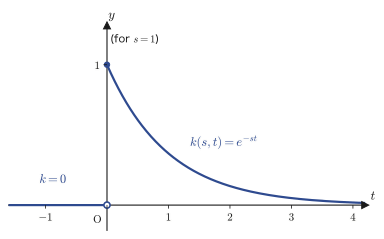
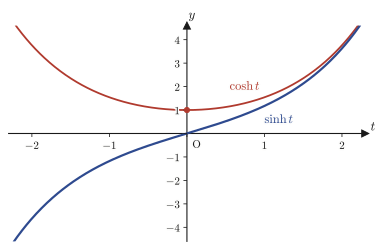
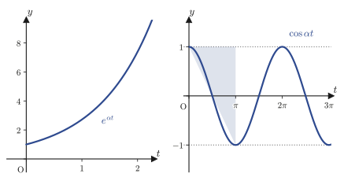
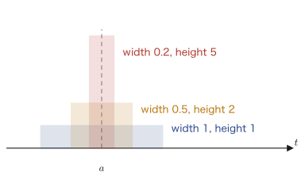
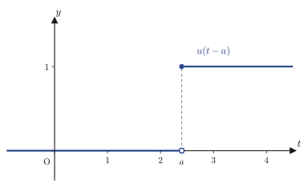

Chapter 31Definition of the Laplace Transform and Basic Formulas
In Chapters 29 and 30 we studied Fourier series, which represent a periodic function as an infinite series of trigonometric functions, and the Fourier transform $\Four[f(t)]=\int_{-\infty}^{\infty}f(t)e^{-i\omega t}\,dt$, which extends them to nonperiodic functions. The Fourier transform was a powerful tool that “translates a function of time $t$ into a function of frequency $\omega$,” but it has one weakness—because the integral extends from $t=-\infty$ to $t=\infty$, the integral does not converge in the first place unless $f(t)$ itself decays to $0$ quite rapidly. Yet many of the signals that we actually deal with in physics and engineering start at $t=0$, “the moment the switch is turned on” (for $t<0$ there is no signal, or we do not consider one), and they may even grow exponentially instead of decaying (for example, the transient response of the current flowing in a circuit, or the solution $e^{\lambda t}$ of an ordinary differential equation itself). This is where the star of this chapter, the Laplace transform, enters. The Laplace transform restricts the interval of integration to $t\ge0$ and replaces the kernel $e^{-i\omega t}$ of the Fourier transform (whose absolute value is always $1$, so it never decays) with the kernel $e^{-st}$, which has a real part (it decays exponentially if the real part of $s$ is positive), so that even somewhat wildly behaved functions can be transformed.
In this chapter we first define the Laplace transform $F(s)=\Lap[f(t)]=\int_0^\infty f(t)e^{-st}\,dt$. Then, relying on nothing but the computation of improper integrals, we build with our own hands, one entry at a time, a table of basic transforms ($1,\,t,\,t^n,\,\sin\omega t,\,\cos\omega t,\,e^{\omega t},\,\sinh\omega t,\,\cosh\omega t$) that we will consult again and again in later chapters. Next we examine the existence condition—“what kind of function can be Laplace-transformed in the first place?”—and clarify the range of functions that can withstand even a steep exponential increase. In the second half we introduce the delta function and the unit step function, which are used in engineering to represent pulse signals and instantaneous impacts, and we prove the shift theorem, which says that the operation of “shifting in time” corresponds, in the world of the Laplace transform, to the simple operation of “multiplying by $e^{-as}$.” Finally we treat the transform formula for periodic functions and the Laplace transform of a derivative, $\Lap[f'(t)]=sF(s)-f(0)$. This last formula is the key to the greatest application of the Laplace transform, namely turning linear differential equations into algebraic equations (however, actually carrying out that application is left to a later volume of this series—the solution methods for ordinary differential equations that you will learn in Part VIII are different ones, which do not borrow the power of the transform).
- The definition of the Laplace transform $F(s)=\Lap[f(t)]=\int_0^\infty f(t)e^{-st}\,dt$, the integral kernel $k(s,t)$, and linearity
- The table of basic transforms: $\Lap[1],\Lap[t],\Lap[t^n],\Lap[\sin\omega t],\Lap[\cos\omega t],\Lap[e^{\omega t}],\Lap[\sinh\omega t],\Lap[\cosh\omega t]$ and their proofs
- That, using Euler's formula, $\Lap[\sin\omega t],\Lap[\cos\omega t]$ can be obtained all at once from nothing but computations with complex numbers
- The definition of a function of exponential order $\alpha$, and the existence condition for the Laplace transform (it is a sufficient condition, not a necessary one)
- The delta function $\delta(t-a)$, the unit step function $u(t-a)$, and their respective Laplace transforms
- The noteworthy fact that the Laplace transform is not a one-to-one correspondence
- The second shift theorem $\Lap[f(t-a)u(t-a)]=e^{-as}F(s)$—a time shift turns into an exponential factor
- The Laplace transform formula for periodic functions (the integral over one period and an infinite geometric series)
- The Laplace transform of a derivative $\Lap[f'(t)]=sF(s)-f(0)$—the key to turning differential equations into algebraic equations
Source notes: Yasuhide Mochizuki, Mathematics Notes: Laplace Transforms, pp. 1–14.
31.1 Definition of the Laplace Transform
The “transformations of functions” that we have studied so far—differentiation, integration, and the Fourier transform—are all alike in the sense that “you put in a function, and another function (or a number) comes out.” The Laplace transform is another member of this family: it translates a function $f(t)$ of time $t$ into a function $F(s)$ of a new variable $s$. Using the symbol $\Lap$ (the letter we will use many times from now on to denote the Laplace transform; it is a script $L$, written in the calligraphic style as $\mathcal{L}$), we write $F(s)=\Lap[f(t)]$.
Definition 31.1: Laplace transform
For a function $f(t)$ (assumed to be defined for $t\ge0$), if
\begin{equation} F(s) = \Lap[f(t)] = \int_0^\infty f(t)\,e^{-st}\,dt \label{eq:31-def} \end{equation}exists (as an improper integral, that is, in the form $\displaystyle\lim_{c\to\infty}\int_0^c f(t)e^{-st}\,dt$ according to Definition 5.3(II) of Chapter 5), then this $F(s)$ is called the Laplace transform of $f(t)$. Furthermore, if we put
$$ k(s,t) = e^{-st} $$then $k(s,t)$ is a function of the two variables $s$ and $t$; in the range $t<0$ we regard it as $0$ (on the understanding that this range does not appear in the integral of the Laplace transform), and for $t\ge0$ it is $e^{-st}$. That is, it can be written by cases as
$$ k(s,t) = \begin{cases} 0 & (t\lt0) \\ e^{-st} & (t\ge0) \end{cases} $$We call this $k(s,t)$ the integral kernel of the Laplace transform. The integral in Definition 31.1 can also be regarded as the integral, with respect to $t$ (from $0$ to $\infty$), of the product of this kernel $k(s,t)$ and $f(t)$.

Let us now check the meaning of the new variable $s$. The integral in Definition 31.1 is carried out with respect to $t$, so the result $F(s)$ does not contain $t$ and is a function of $s$ alone. For the exponent $-st$ of $e^{-st}$ to be dimensionless (a number with no units), the unit of $s$ must be the reciprocal of the unit of time. The reciprocal of time is exactly the unit of frequency, so the range over which the Laplace-transform variable $s$ moves (the $s$-plane, or for now the range of real numbers) is also called the frequency domain. This is the same role that the angular frequency $\omega$ played in the Fourier transform of Chapter 30; indeed, if we extend $s$ to a complex number $s=\sigma+i\omega$ (the full discussion is left to the chapters on complex analysis), then in the case $\sigma=0$ we get $k(s,t)=e^{-i\omega t}$, which coincides exactly with the kernel of the Fourier transform. In other words, the Laplace transform can be understood as the Fourier-transform kernel $e^{-i\omega t}$ supplemented with the decay factor $e^{-\sigma t}$ coming from the real part, which greatly widens the class of functions for which the integral converges.
Here is one more property that we will use many times from now on, so let us check it in advance. Since the Laplace transform is defined by the linear operation of “integration,” sums and constant multiples can be taken straight outside—this is called linearity. Although it is not stated explicitly in the original notes, it is a basic property that we will use unconsciously in almost every computation from here on, so we state it carefully once here and prove it.
Theorem 31.1: Linearity of the Laplace transform
If the Laplace transforms of both $f(t),g(t)$ exist and $c_1,c_2$ are constants, then
\begin{equation} \Lap[c_1f(t)+c_2g(t)] = c_1\Lap[f(t)] + c_2\Lap[g(t)] \label{eq:31-linearity} \end{equation}holds.
Proof
Substituting directly into Definition 31.1, we obtain
$$ \Lap[c_1f(t)+c_2g(t)] = \int_0^\infty \bigl(c_1f(t)+c_2g(t)\bigr)e^{-st}\,dt $$Since integration preserves sums (a property of definite integrals, already covered in Chapter 5, Section 5.2), we can split the integral whose integrand is a sum into a sum of two integrals. Furthermore, the constants $c_1,c_2$ do not depend on the integration variable $t$, so they can be taken outside the integrals.
$$ = c_1\int_0^\infty f(t)e^{-st}\,dt + c_2\int_0^\infty g(t)e^{-st}\,dt = c_1\Lap[f(t)]+c_2\Lap[g(t)] $$∎
Intuition: The Laplace transform is a “machine that maps functions to functions”
The “functions” you became familiar with up through high school were machines that output a number $f(x)$ when you put in a number $x$. The Laplace transform $\Lap$ is a machine one level higher: when you put in a whole function $f(t)$, another whole function $F(s)$ comes out. In mathematics, such a thing that “maps functions to functions” is called an operator or a transform. Linearity (Theorem 31.1) states the most natural property of this machine: it “preserves sums and preserves constant multiples”—that is, adding or taking constant multiples before putting the functions into the machine gives the same result as doing so after they come out.
Example 31.1: Computing $\Lap[e^{-2t}]$ directly from the definition
Following Definition 31.1, compute the Laplace transform $\Lap[e^{-2t}]$ of $f(t)=e^{-2t}$ directly, going back to the definition of the improper integral (Chapter 5, Section 5.4, in the form $\lim_{c\to\infty}$).
Solution. Just as the definition prescribes, we first integrate up to a finite upper limit $c$ and then let $c\to\infty$.
$$ \Lap[e^{-2t}] = \int_0^\infty e^{-2t}\cdot e^{-st}\,dt = \lim_{c\to\infty}\int_0^c e^{-(s+2)t}\,dt $$(We combined $e^{-2t}\cdot e^{-st}=e^{-2t-st}=e^{-(s+2)t}$ using the law of exponents.) Evaluating the integral inside the limit, we get
$$ \int_0^c e^{-(s+2)t}\,dt = \left[-\frac{1}{s+2}e^{-(s+2)t}\right]_0^c = -\frac{1}{s+2}e^{-(s+2)c} + \frac{1}{s+2}\underbrace{e^{0}}_{1} $$Now if $s+2>0$ (that is, $s>-2$), then as $c\to\infty$ the exponent satisfies $-(s+2)c\to-\infty$, so $e^{-(s+2)c}\to0$. Therefore, we obtain
$$ \Lap[e^{-2t}] = \lim_{c\to\infty}\left(-\frac{1}{s+2}e^{-(s+2)c} + \frac{1}{s+2}\right) = 0 + \frac{1}{s+2} = \frac{1}{s+2}\qquad(s>-2) $$This computation also agrees with the result $\dfrac1{s-(-2)}=\dfrac1{s+2}$ that we obtain later by substituting $\omega=-2$ into Formula 31.6 ($\Lap[e^{\omega t}]=\dfrac1{s-\omega}$). We will confirm once more in Section 31.3 that the same procedure works unchanged for a general $\omega$.
31.2 Laplace Transforms of Power Functions
Let us begin by patiently working through the computations from Definition 31.1 by hand. We start from the simplest functions, $f(t)=1$ (the constant function) and $f(t)=t$, and then extend the pattern we find there to a general $t^n$ ($n$ an integer greater than or equal to $0$).
31.2.1 $\Lap[1]$ and $\Lap[t]$
Formula 31.1: $\Lap[1]=\dfrac1s\ (s>0)$
Proof
Substitute $f(t)=1$ directly into Definition 31.1.
$$ \Lap[1] = \int_0^\infty 1\cdot e^{-st}\,dt = \lim_{c\to\infty}\int_0^c e^{-st}\,dt = \lim_{c\to\infty}\left[-\frac1s e^{-st}\right]_0^c $$(The indefinite integral $\int e^{-st}\,dt=-\frac1s e^{-st}$ can be verified by differentiating the right-hand side with respect to $t$: this gives $-\frac1s\cdot(-s)e^{-st}=e^{-st}$, which returns the integrand.)
$$ = \lim_{c\to\infty}\left(-\frac1s e^{-sc} - \left(-\frac1s e^{0}\right)\right) = \lim_{c\to\infty}\left(-\frac1s e^{-sc}\right) + \frac1s $$If $s>0$, then $e^{-sc}\to0$ as $c\to\infty$, so the first term converges to $0$. Hence
$$ \Lap[1] = 0+\frac1s = \frac1s\qquad(s>0) $$∎ (For $s\le0$, $e^{-sc}$ does not converge to $0$, so the improper integral itself does not exist—this is what the condition “$s>0$” means.)
Formula 31.2: $\Lap[t]=\dfrac1{s^2}\ (s>0)$
Proof
Substituting $f(t)=t$ into Definition 31.1 gives $\displaystyle\Lap[t]=\int_0^\infty t\cdot e^{-st}\,dt$. Since this is (unlike the constant function) a product of $t$ and $e^{-st}$, we use integration by parts (covered in high school mathematics), $\int u'v\,dt=uv-\int uv'\,dt$. Let $u=-\frac1s e^{-st}$ (this is an antiderivative of $e^{-st}$) and $v=t$; that is, $u'=e^{-st}$ and $v'=1$. Let us first carry out the computation in the form of an indefinite integral:
$$ \int t\cdot e^{-st}\,dt = \int t\cdot\left(-\frac1s e^{-st}\right)'dt = t\cdot\left(-\frac1s e^{-st}\right) - \int 1\cdot\left(-\frac1s e^{-st}\right)dt $$(In the integration by parts formula, we chose $t$ as the factor to be differentiated and $e^{-st}$ as the factor to be integrated, because differentiating $t$ gives $1$ and so simplifies the expression.) Computing the integral that remains on the right-hand side, we get
$$ = -\frac{t}{s}e^{-st} + \frac1s\int e^{-st}\,dt = -\frac{t}{s}e^{-st} - \frac1{s^2}e^{-st} $$Returning this to the form of a definite integral (an improper integral), we get
$$ \Lap[t] = \lim_{c\to\infty}\left[-\frac{t}{s}e^{-st} - \frac1{s^2}e^{-st}\right]_0^c $$The part obtained by substituting the upper limit $t=c$ converges to $0$ as $c\to\infty$ when $s>0$ (the speed at which $e^{-sc}$ approaches $0$ is such that, even with a factor $c$ in front, $c\cdot e^{-sc}\to0$, and this is guaranteed by the fact that exponential growth is faster than polynomial growth—for this, one can use the idea of Taylor expansion in Chapter 4, or simply confirm $\lim_{c\to\infty}c/e^{sc}=0$ by l'Hôpital's rule). Substituting the lower limit $t=0$ gives $-\frac{0}{s}e^{0}-\frac1{s^2}e^{0}=-\frac1{s^2}$. Therefore,
$$ \Lap[t] = \Bigl(0-0\Bigr) - \left(-\frac1{s^2}\right) = \frac1{s^2}\qquad(s>0) $$∎
31.2.2 $\Lap[t^n]$ and generalization by a recurrence relation
Now that we understand the computations of $\Lap[1]$ and $\Lap[t]$, we next want to find $\Lap[t^2]$, and then the general $\Lap[t^n]$ ($n=0,1,2,\ldots$). Rather than integrating by parts for a general $n$ right away, if we first work out the case $n=2$ by hand, a pattern that also works for general $n$ becomes visible.
Using integration by parts for $f(t)=t^2$ (with $u=-\frac1se^{-st}$, $v=t^2$, $v'=2t$), we get
$$ \int_0^\infty t^2 e^{-st}\,dt = \underbrace{\left[t^2\cdot\left(-\frac1s e^{-st}\right)\right]_0^\infty}_{0\ (s>0\text{: the boundary term vanishes})} + \frac{2}{s}\int_0^\infty t\cdot e^{-st}\,dt = \frac2s\Lap[t] = \frac2s\cdot\frac1{s^2} = \frac{2}{s^3} $$Thus $\Lap[t^2]$ turns out to be expressible in terms of $\Lap[t]$. The same thing happens for a general $n$—this is the content of Formula 31.3.
Formula 31.3: $\Lap[t^n]=\dfrac{n!}{s^{n+1}}\ (s>0,\ n=0,1,2,\ldots)$
Proof (by a recurrence relation and mathematical induction)
We use integration by parts for $f(t)=t^n$ ($n\ge1$). Letting $u=-\frac1se^{-st}$ ($u'=e^{-st}$) and $v=t^n$ ($v'=nt^{n-1}$), we get
$$ \Lap[t^n] = \int_0^\infty t^n e^{-st}\,dt = \underbrace{\left[t^n\cdot\left(-\frac1se^{-st}\right)\right]_0^\infty}_{0} + \frac1s\int_0^\infty n\,t^{n-1}e^{-st}\,dt $$(Why the boundary term is $0$: substituting $t=0$ gives $t^n=0$ (since $n\ge1$), so the term is $0$. As $t\to\infty$, $t^n$ grows only polynomially, whereas $e^{-st}$ ($s>0$) approaches $0$ exponentially, so the product satisfies $t^n e^{-st}\to0$—this is just the same reasoning as in the proof for $\Lap[t]$, extended to degree $n$.)
Taking the constant $n$ on the right-hand side outside the integral, we get
$$ \Lap[t^n] = \frac{n}{s}\int_0^\infty t^{n-1}e^{-st}\,dt = \frac{n}{s}\Lap[t^{n-1}] $$This is a recurrence relation (a formula that expresses a term by using the term one before it; here we apply the idea familiar from sequences to the sequence of functions given by “the $n$th Laplace transform”). Lowering $n$ one step at a time in the same formula, to $n-1,n-2,\ldots$, we obtain the following relations in succession:
$$ \Lap[t^{n-1}] = \frac{n-1}{s}\Lap[t^{n-2}],\qquad \Lap[t^{n-2}]=\frac{n-2}{s}\Lap[t^{n-3}],\ \ldots,\ \Lap[t^{1}]=\frac{1}{s}\Lap[t^0] $$Substituting all of these into the first equation, we get
$$ \Lap[t^n] = \frac{n}{s}\cdot\frac{n-1}{s}\cdot\frac{n-2}{s}\cdots\frac{2}{s}\cdot\frac1s\cdot\Lap[t^0] $$Here $\Lap[t^0]=\Lap[1]=\dfrac1s$ (Formula 31.1), and in the fraction $\dfrac ns\cdot\dfrac{n-1}s\cdots\dfrac1s$ the numerator is $n\times(n-1)\times\cdots\times1=n!$ (the factorial of $n$; $n!$ is read “n factorial”), while the denominator contains $n$ factors of $s$, so it is $s^n$. Therefore, we obtain
$$ \Lap[t^n] = \frac{n!}{s^n}\cdot\frac1s = \frac{n!}{s^{n+1}}\qquad(s>0) $$(Strictly speaking, what we have shown is that “if the recurrence relation holds, then the general term is this”; to make the logic complete, the argument can be rewritten in the form of mathematical induction—“the formula holds for $n=0$ ($0!/s^1=1/s=\Lap[1]$, which is exactly Formula 31.1), and if we assume that it holds for $n=k$, then it also holds for $n=k+1$ by the recurrence relation.” The content is exactly the same as the computation above.) ∎
Example 31.2: Computing $\Lap[t^2]$ directly from the definition and checking it against Formula 31.3 ($n=2$)
Without going through the recurrence relation of Formula 31.3, compute the improper integral of Definition 31.1 directly (using integration by parts twice for $n=2$), and verify that it agrees with $\Lap[t^2]=\dfrac{2!}{s^3}=\dfrac2{s^3}$.
Solution. Applying integration by parts once, with $u=-\frac1se^{-st}$ and $v=t^2$ ($v'=2t$), we get
$$ \int_0^\infty t^2 e^{-st}\,dt = \underbrace{\left[t^2\left(-\frac1se^{-st}\right)\right]_0^\infty}_{0} + \frac2s\int_0^\infty t\,e^{-st}\,dt $$(The reason the boundary term is $0$ is the same as in the proof of Formula 31.3.) Next, applying integration by parts once more to the remaining integral $\int_0^\infty t\,e^{-st}\,dt$ (with $u=-\frac1se^{-st}$, $v=t$, $v'=1$), we get
$$ \int_0^\infty t\,e^{-st}\,dt = \underbrace{\left[t\left(-\frac1se^{-st}\right)\right]_0^\infty}_{0} + \frac1s\int_0^\infty e^{-st}\,dt = \frac1s\cdot\frac1s = \frac1{s^2} $$(The last integral is exactly the one in the proof of Formula 31.1.) Combining the above, we get
$$ \int_0^\infty t^2 e^{-st}\,dt = \frac2s\cdot\frac1{s^2} = \frac{2}{s^3} $$and this indeed agrees with the value obtained by substituting $n=2$ into Formula 31.3, namely $\dfrac{2!}{s^3}=\dfrac{2}{s^3}$ (the same result was also verified with SymPy's definite integral). Instead of repeating integration by parts twice, tracing the recurrence relation of Formula 31.3 one step at a time is precisely an abstraction of this computation as “the same form even when $n$ changes.”
31.3 Laplace Transforms of Trigonometric, Hyperbolic, and Exponential Functions
Next we find the Laplace transforms of the three kinds of functions that appear most frequently in engineering—the trigonometric functions $\sin\omega t,\cos\omega t$, the exponential function $e^{\omega t}$, and the hyperbolic functions $\sinh\omega t,\cosh\omega t$. The transforms of the trigonometric functions cannot be handled as before by “integrating by parts once and being done”; a little ingenuity is required.
31.3.1 $\Lap[\sin\omega t]$ and $\Lap[\cos\omega t]$
Formula 31.4: $\Lap[\sin\omega t]=\dfrac{\omega}{s^2+\omega^2}\ (s>0)$
Proof
We substitute $f(t)=\sin\omega t$ into Definition 31.1 and integrate by parts (taking $u=-\frac1se^{-st}$, $v=\sin\omega t$, $v'=\omega\cos\omega t$).
$$ \Lap[\sin\omega t] = \int_0^\infty \sin\omega t\cdot e^{-st}\,dt = \underbrace{\left[\sin\omega t\left(-\frac1se^{-st}\right)\right]_0^\infty}_{0} + \frac{\omega}{s}\int_0^\infty \cos\omega t\cdot e^{-st}\,dt $$(Why the boundary term is $0$: at $t=0$, $\sin0=0$. As $t\to\infty$, $|\sin\omega t|\le1$ (bounded), whereas $e^{-st}\to0$ (since $s>0$), so the product converges to $0$.) Applying integration by parts once more to the integral $\int_0^\infty\cos\omega t\,e^{-st}\,dt$ that remains on the right-hand side (taking $u=-\frac1se^{-st}$, $v=\cos\omega t$, $v'=-\omega\sin\omega t$), we obtain
$$ \int_0^\infty \cos\omega t\cdot e^{-st}\,dt = \underbrace{\left[\cos\omega t\left(-\frac1se^{-st}\right)\right]_0^\infty}_{\frac1s} - \frac{\omega}{s}\int_0^\infty \sin\omega t\cdot e^{-st}\,dt $$(The boundary term this time: as $t\to\infty$ it is again $0$. At $t=0$, $\cos0\left(-\frac1se^{0}\right)=-\frac1s$, so $[\,\cdot\,]_0^\infty=0-\left(-\frac1s\right)=\frac1s$.) That is,
$$ \int_0^\infty \cos\omega t\cdot e^{-st}\,dt = \frac1s - \frac{\omega}{s}\Lap[\sin\omega t] $$This is the equation we have obtained. Substituting it into the first equation, we get
$$ \Lap[\sin\omega t] = \frac{\omega}{s}\left(\frac1s - \frac{\omega}{s}\Lap[\sin\omega t]\right) = \frac{\omega}{s^2} - \frac{\omega^2}{s^2}\Lap[\sin\omega t] $$This is a self-referential equation, in which the very quantity we want, $\Lap[\sin\omega t]$, also appears on the right-hand side. It looks strange at first, but it is nothing other than the equation $X=\dfrac{\omega}{s^2}-\dfrac{\omega^2}{s^2}X$ for the unknown $X=\Lap[\sin\omega t]$. We need only move terms to one side and solve for $X$.
$$ \left(1+\frac{\omega^2}{s^2}\right)\Lap[\sin\omega t] = \frac{\omega}{s^2} \qquad\therefore\quad \Lap[\sin\omega t] = \frac{\dfrac{\omega}{s^2}}{1+\dfrac{\omega^2}{s^2}} = \frac{\omega}{s^2+\omega^2} $$(In the last equality, we multiplied the numerator and denominator by $s^2$ to clear the fraction within the fraction.) ∎
Intuition: The idea of an “equation that contains itself”
In calculations up through high school, the quantity we want rarely appears on both sides of an equation. Here, however, by integrating by parts twice we exploit the property that an oscillating function ($\sin,\cos$) “returns to itself,” deliberately create an equation that contains $\Lap[\sin\omega t]$, and solve it algebraically. The same idea is used when finding integrals such as $\int e^{ax}\sin bx\,dx$ (after integrating by parts twice, the original integral appears again and gives an equation), so it is a technique well worth keeping in mind.
Formula 31.5: $\Lap[\cos\omega t]=\dfrac{s}{s^2+\omega^2}\ (s>0)$
Proof
In the course of the proof of Formula 31.4, we already obtained the equation
$$ \int_0^\infty \cos\omega t\cdot e^{-st}\,dt = \frac1s - \frac{\omega}{s}\Lap[\sin\omega t] $$Its left-hand side is exactly $\Lap[\cos\omega t]$, so we need only substitute the result of Formula 31.4, $\Lap[\sin\omega t]=\dfrac{\omega}{s^2+\omega^2}$, into the right-hand side.
$$ \Lap[\cos\omega t] = \frac1s - \frac{\omega}{s}\cdot\frac{\omega}{s^2+\omega^2} = \frac1s\left(1-\frac{\omega^2}{s^2+\omega^2}\right) = \frac1s\cdot\frac{(s^2+\omega^2)-\omega^2}{s^2+\omega^2} = \frac1s\cdot\frac{s^2}{s^2+\omega^2} = \frac{s}{s^2+\omega^2} $$∎ (Because we had found Formula 31.4 first, Formula 31.5 required only a substitution—this is the reason for the order of computation in the original notes, $\sin$ first and $\cos$ afterward.)
31.3.2 $\Lap[e^{\omega t}]$ and an alternative proof via Euler's formula
Formula 31.6: $\Lap[e^{\omega t}]=\dfrac1{s-\omega}\ (s>\omega)$
Proof
Substituting $f(t)=e^{\omega t}$ into Definition 31.1 and using the law of exponents $e^{\omega t}\cdot e^{-st}=e^{-(s-\omega)t}$, we obtain
$$ \Lap[e^{\omega t}] = \int_0^\infty e^{\omega t}\cdot e^{-st}\,dt = \int_0^\infty e^{-(s-\omega)t}\,dt = \lim_{c\to\infty}\left[-\frac1{s-\omega}e^{-(s-\omega)t}\right]_0^c $$If $s-\omega>0$ (that is, $s>\omega$), then as $c\to\infty$ we have $e^{-(s-\omega)c}\to0$ (for the same reason as in the proof of Formula 31.1), so
$$ \Lap[e^{\omega t}] = 0-\left(-\frac1{s-\omega}\right) = \frac1{s-\omega}\qquad(s>\omega) $$∎ (We already checked the case $\omega=-2$ concretely in Example 31.1.)
Why?: Euler's formula also gives the transforms of $\sin,\cos$
Since Formula 31.6 used only the fact that $\omega$ is real, let us suppose that the same formula continues to hold even if we formally substitute the pure imaginary number $\omega=i\omega_0$ (where $\omega_0$ is real and $i=\sqrt{-1}$).
$$ \Lap[e^{i\omega_0 t}] = \frac1{s-i\omega_0} $$Rationalizing the right-hand side by multiplying the numerator and denominator by the complex conjugate $s+i\omega_0$ (in order to make the complex-valued denominator real), we get
$$ \frac1{s-i\omega_0} = \frac{s+i\omega_0}{(s-i\omega_0)(s+i\omega_0)} = \frac{s+i\omega_0}{s^2+\omega_0^2} = \frac{s}{s^2+\omega_0^2} + i\,\frac{\omega_0}{s^2+\omega_0^2} $$(The denominator is $(s-i\omega_0)(s+i\omega_0)=s^2-(i\omega_0)^2=s^2+\omega_0^2$—we used $i^2=-1$.) On the other hand, Euler's formula from Chapter 2, Section 2.1, $e^{i\theta}=\cos\theta+i\sin\theta$, gives $e^{i\omega_0 t}=\cos\omega_0 t+i\sin\omega_0 t$, so by linearity (Theorem 31.1, regarded as applied to the real and imaginary parts separately),
$$ \Lap[e^{i\omega_0 t}] = \Lap[\cos\omega_0 t + i\sin\omega_0 t] = \Lap[\cos\omega_0 t] + i\,\Lap[\sin\omega_0 t] $$Comparing the real parts and the imaginary parts of the two expressions, we get
$$ \Lap[\cos\omega_0 t] = \frac{s}{s^2+\omega_0^2},\qquad \Lap[\sin\omega_0 t] = \frac{\omega_0}{s^2+\omega_0^2} $$These agree exactly with Formula 31.4 and Formula 31.5. Instead of integrating by parts twice, we can reach the same result using only Euler's formula and complex arithmetic. (A rigorous justification of this method—the Laplace transform of complex-valued functions, and the argument that extends $s$ to complex numbers—is left to the chapters on complex analysis, but there is no problem in using the result to “check our answers.”)
Example 31.3: An alternative proof of $\Lap[\sin\omega t],\Lap[\cos\omega t]$ via Euler's formula
Derive Formula 31.4 and Formula 31.5 without using integration by parts, using only Euler's formula and Formula 31.6.
Solution. The argument in the “Why?” box above serves as the solution as it stands. Writing out only the main points: applying linearity to $e^{i\omega t}=\cos\omega t+i\sin\omega t$ (Euler's formula), we obtain
$$ \Lap[e^{i\omega t}] = \Lap[\cos\omega t]+i\Lap[\sin\omega t] $$while substituting $\omega\to i\omega$ (formally) into Formula 31.6, we obtain
$$ \Lap[e^{i\omega t}] = \frac1{s-i\omega} = \frac{s+i\omega}{s^2+\omega^2} = \frac{s}{s^2+\omega^2}+i\frac{\omega}{s^2+\omega^2} $$Both right-hand sides represent the same $\Lap[e^{i\omega t}]$, so comparing the real and imaginary parts separately gives
$$ \Lap[\cos\omega t]=\frac{s}{s^2+\omega^2},\qquad \Lap[\sin\omega t]=\frac{\omega}{s^2+\omega^2} $$simultaneously. In contrast to integrating by parts twice and solving a self-referential equation (the proof of Formula 31.4), this method needs only algebraic computation with complex numbers, so as a calculation it is quick (the price being that stating rigorously why a complex number may be substituted requires knowledge of complex analysis).
31.3.3 $\Lap[\sinh\omega t]$ and $\Lap[\cosh\omega t]$
Recall: Definition of the hyperbolic functions (Chapter 2, Section 2.5)
In Definition 2.2 of Chapter 2, Section 2.5, we defined the hyperbolic functions by
$$ \sinh\omega t = \frac{e^{\omega t}-e^{-\omega t}}{2},\qquad \cosh\omega t = \frac{e^{\omega t}+e^{-\omega t}}{2} $$Whereas the trigonometric functions $\sin,\cos$ parametrize the unit circle $X^2+Y^2=1$, the hyperbolic functions were the functions that parametrize the right half of the hyperbola $X^2-Y^2=1$ as $(X,Y)=(\cosh t,\sinh t)$ (see Chapter 2, Section 2.5 for details). Figure 31.2 shows their graphs—$\cosh\omega t$ is an even function that is convex (concave up) with minimum value $1$ at $t=0$, and $\sinh\omega t$ is an odd function that passes through the origin and increases monotonically.

Formula 31.7: $\Lap[\sinh\omega t]=\dfrac{\omega}{s^2-\omega^2}\ (s>|\omega|)$
Proof
We apply linearity (Theorem 31.1) to the definition (Chapter 2, Definition 2.2) $\sinh\omega t=\dfrac{e^{\omega t}-e^{-\omega t}}2$ and use Formula 31.6 (for both $\omega$ and $-\omega$).
$$ \Lap[\sinh\omega t] = \Lap\!\left[\frac{e^{\omega t}-e^{-\omega t}}2\right] = \frac12\Bigl(\Lap[e^{\omega t}]-\Lap[e^{-\omega t}]\Bigr) = \frac12\left(\frac1{s-\omega}-\frac1{s+\omega}\right) $$(We used the fact that replacing $\omega\to-\omega$ in Formula 31.6 gives $\Lap[e^{-\omega t}]=\dfrac1{s-(-\omega)}=\dfrac1{s+\omega}$. Also, $\Lap[e^{\omega t}]$ exists for $s>\omega$ and $\Lap[e^{-\omega t}]$ exists for $s>-\omega$, so both exist simultaneously in the common range $s>|\omega|$.) Combining the fractions over a common denominator, we get
$$ \frac12\left(\frac1{s-\omega}-\frac1{s+\omega}\right) = \frac12\cdot\frac{(s+\omega)-(s-\omega)}{(s-\omega)(s+\omega)} = \frac12\cdot\frac{2\omega}{s^2-\omega^2} = \frac{\omega}{s^2-\omega^2} $$∎
Formula 31.8: $\Lap[\cosh\omega t]=\dfrac{s}{s^2-\omega^2}\ (s>|\omega|)$
Proof
Exactly as for Formula 31.7, we apply linearity and Formula 31.6 to $\cosh\omega t=\dfrac{e^{\omega t}+e^{-\omega t}}2$.
$$ \Lap[\cosh\omega t] = \frac12\Bigl(\Lap[e^{\omega t}]+\Lap[e^{-\omega t}]\Bigr) = \frac12\left(\frac1{s-\omega}+\frac1{s+\omega}\right) = \frac12\cdot\frac{(s+\omega)+(s-\omega)}{s^2-\omega^2} = \frac12\cdot\frac{2s}{s^2-\omega^2} = \frac{s}{s^2-\omega^2} $$∎
Example 31.4: Checking Formula 31.7 and Formula 31.8 with the concrete value $\omega=3$
Compute $\Lap[e^{3t}]$ and $\Lap[e^{-3t}]$ from Formula 31.6, build $\Lap[\sinh3t]$ and $\Lap[\cosh3t]$ from them, and confirm, using nothing but calculations with concrete numbers, that they agree with Formula 31.7 and Formula 31.8 (with $\omega=3$).
Solution. Substituting $\omega=3$ and $\omega=-3$, respectively, into Formula 31.6, we obtain
$$ \Lap[e^{3t}] = \frac1{s-3},\qquad \Lap[e^{-3t}] = \frac1{s+3} $$Applying linearity to the definition $\sinh3t=\dfrac{e^{3t}-e^{-3t}}2$, we obtain
$$ \Lap[\sinh3t] = \frac12\left(\frac1{s-3}-\frac1{s+3}\right) = \frac12\cdot\frac{(s+3)-(s-3)}{(s-3)(s+3)} = \frac12\cdot\frac{6}{s^2-9} = \frac{3}{s^2-9} $$This agrees exactly with $\dfrac{3}{s^2-3^2}=\dfrac3{s^2-9}$, obtained by substituting $\omega=3$ into Formula 31.7. Similarly, from $\cosh3t=\dfrac{e^{3t}+e^{-3t}}2$ we obtain
$$ \Lap[\cosh3t] = \frac12\left(\frac1{s-3}+\frac1{s+3}\right) = \frac12\cdot\frac{2s}{s^2-9} = \frac{s}{s^2-9} $$This too agrees with the result of substituting $\omega=3$ into Formula 31.8 (verified with SymPy).
Example 31.5: Finding $\Lap[3-2t+4\sin3t]$ using linearity
Combining the table of basic transforms obtained so far (Formulas 31.1, 31.2, and 31.4) with linearity (Theorem 31.1), find the Laplace transform $\Lap[f(t)]$ of $f(t)=3-2t+4\sin3t$.
Solution. By linearity (Theorem 31.1; it holds in the same way for three or more terms),
$$ \Lap[3-2t+4\sin3t] = 3\Lap[1] - 2\Lap[t] + 4\Lap[\sin3t] $$Substituting Formula 31.1 ($\Lap[1]=1/s$), Formula 31.2 ($\Lap[t]=1/s^2$), and Formula 31.4 ($\Lap[\sin\omega t]=\omega/(s^2+\omega^2)$ with $\omega=3$) into the respective terms, we obtain
$$ = 3\cdot\frac1s - 2\cdot\frac1{s^2} + 4\cdot\frac3{s^2+9} = \frac3s - \frac2{s^2} + \frac{12}{s^2+9} $$This is the answer (valid for $s>0$; we have verified with SymPy that this expression agrees with the result of taking the Laplace transform of $f(t)$ directly). In this way, with the table of basic transforms and linearity alone we can compute Laplace transforms mechanically, however many terms there are—this is the aim of this chapter's strategy of “first build the table of basic transforms.”
31.4 Existence Conditions for the Laplace Transform
So far we have computed the Laplace transforms of specific functions one after another, but we have never asked in the first place, “For which functions can the Laplace transform be taken?” Indeed, for a function that grows at a furious rate such as $f(t)=e^{t^2}$, the product $e^{t^2}\cdot e^{-st}=e^{t^2-st}$ diverges to $+\infty$ as $t\to\infty$ no matter which $s$ we choose (because $t^2$ grows faster than $st$), so the improper integral does not exist. In this section we clarify the limit on “how fast a function is allowed to grow.”
Definition 31.2: Function of exponential order $\alpha$
For a function $f(t)$ defined on the interval $0\le t<\infty$, suppose that there exist a constant $M>0$ and $\alpha\ (0\le\alpha<\infty)$ such that
$$ |f(t)| \le Me^{\alpha t}\qquad(\text{for all }t\ge0\text{}) $$holds. Then $f(t)$ is said to be a function of exponential order $\alpha$.
In other words, it means that “the speed at which $f(t)$ grows is no more than what can be bounded from above by some exponential function $Me^{\alpha t}$.” For example, $e^{\alpha t}$ itself is of course of exponential order $\alpha$ (we may take $M=1$). On the other hand, since $|\cos\alpha t|\le1=1\cdot e^{0\cdot t}$ always holds, $\cos\alpha t$ is of exponential order $0$ ($M=1,\alpha=0$)—every function that, like a trigonometric function, oscillates and remains bounded is classified as being of exponential order $0$.

Theorem 31.2: Existence theorem for the Laplace transform (sufficient condition)
If a function $f(t)$ defined on the interval $0\le t<\infty$ is piecewise continuous (continuous except at finitely many points, at which the left-hand and right-hand limits also exist) and is a function of exponential order $\alpha$ (Definition 31.2), then the Laplace transform $\Lap[f(t)]$ of $f(t)$ exists for every $s$ satisfying $s>\alpha$.
Proof
When $f(t)$ satisfies $|f(t)|\le Me^{\alpha t}$, we show that $\Lap[f(t)]$ exists (that is, the improper integral converges). Using the fact that the absolute value of an integral is at most the integral of the absolute value of the integrand (a property extending the triangle inequality to integrals), we have
$$ |F(s)| = \bigl|\Lap[f(t)]\bigr| = \left|\int_0^\infty f(t)e^{-st}\,dt\right| \le \int_0^\infty |f(t)|\,e^{-st}\,dt $$Here, note that when $s>0$ we have $e^{-st}>0$, so the absolute value sign can be taken outside. Using the assumption $|f(t)|\le Me^{\alpha t}$ as well, we obtain
$$ \le \int_0^\infty Me^{\alpha t}e^{-st}\,dt = M\int_0^\infty e^{-(s-\alpha)t}\,dt $$This last integral has exactly the same form as the one in the proof of Formula 31.1 (an integral with exponent $-(s-\alpha)$). If $s-\alpha>0$ (that is, $s>\alpha$), then
$$ M\int_0^\infty e^{-(s-\alpha)t}\,dt = M\left[-\frac1{s-\alpha}e^{-(s-\alpha)t}\right]_0^\infty = M\cdot\frac1{s-\alpha} = \frac{M}{s-\alpha} $$(Since $s-\alpha>0$, we have $e^{-(s-\alpha)t}\to0$ as $t\to\infty$, and $e^0=1$ at $t=0$. This is simply a rerun of the proof of Formula 31.1.) We have thus shown that $|F(s)|\le\dfrac{M}{s-\alpha}$ (a finite value). Since the integral $\int_0^\infty|f(t)|e^{-st}\,dt$ is itself bounded above by a finite value (and $f$ is piecewise continuous, so $|f(t)|e^{-st}$ is integrable), the original improper integral $\int_0^\infty f(t)e^{-st}\,dt$ also converges. Therefore, if $f(t)$ satisfies $|f(t)|\le Me^{\alpha t}$, then $\Lap[f(t)]$ exists for every $s$ with $s>\alpha$. ∎
Caution: The converse does not hold
Theorem 31.2 states the sufficient condition “of exponential order $\alpha$ $\Longrightarrow$ the Laplace transform exists”; its converse (“the Laplace transform exists $\Longrightarrow$ of exponential order $\alpha$”) does not hold in general. That is, even a function that grows so violently that it is not bounded by any exponential function, whatever its growth rate, can still have a Laplace transform.
Here is one concrete example (the proof in the original notes breaks off here, unfinished, so this book supplies the counterexample). Consider the following function.
$$ f(t) = 2t\cos\!\left(e^{t^2}\right)e^{t^2} $$This is in fact the derivative of some function. Setting $g(t)=\sin\!\left(e^{t^2}\right)$ and differentiating the composite function (note that $\dfrac{d}{dt}e^{t^2}=2te^{t^2}$), we obtain
$$ g'(t) = \cos\!\left(e^{t^2}\right)\cdot\frac{d}{dt}e^{t^2} = \cos\!\left(e^{t^2}\right)\cdot2te^{t^2} = f(t) $$That is, $f(t)=g'(t)$. Now let us verify properly, and not just in intuitive language, why $f(t)$ is not of exponential order $\alpha$ for any $\alpha$. The function $h(t)=e^{t^2}$ is continuous and strictly monotonically increasing for $t\ge0$ ($h'(t)=2te^{t^2}>0$ for $t>0$); starting from $h(0)=1$, it grows continuously without bound as $t\to\infty$, skipping no value. Therefore (by the intermediate value theorem for continuous functions), for any integer $k$, however large, there is exactly one $t_k>0$ satisfying
$$ h(t_k) = e^{t_k^2} = 2\pi k $$(explicitly, $t_k=\sqrt{\ln(2\pi k)}$, and $t_k\to\infty$ as $k\to\infty$). At this $t_k$ we have
$$ \cos\!\left(e^{t_k^2}\right) = \cos(2\pi k) = 1 $$It is not that the oscillation “happens to dip to near $0$ at a moment when $2te^{t^2}$ is large, and so cancels it”; on the contrary, the moments at which it takes exactly its maximum value $1$ come around infinitely often and in an orderly fashion as $t\to\infty$ (corresponding to $k=1,2,3,\ldots$). At such a moment, $|f(t_k)|=2t_ke^{t_k^2}\cdot1=2t_ke^{t_k^2}$. What we use here is the simple fact that $t^2-\alpha t=t(t-\alpha)\to\infty$ as $t\to\infty$ (once $t$ becomes larger than $\alpha$, we have $t-\alpha>0$, and the product $t(t-\alpha)$ grows without bound); this fact is used once more, in a different form, in Example 31.6(b) below, when we show that $e^{t^2}$ itself is not of exponential order $\alpha$. Since $t_k\to\infty$, if we take $k$ (and hence $t_k$) large enough, then $t_k>\alpha$ and $2t_k>M$, and in that case we end up with
$$ |f(t_k)| = 2t_ke^{t_k^2} > Me^{\alpha t_k} $$In other words, whatever $M,\alpha$ we choose beforehand, there exist (infinitely many) $t_k$ that violate the bound, so $f(t)$ is not of exponential order $\alpha$ for any $\alpha$ (no $M,\alpha$ satisfying Definition 31.2 exist). Nevertheless, if we compute $\Lap[f(t)]=\Lap[g'(t)]$ by integration by parts, we get
$$ \Lap[f(t)] = \int_0^\infty g'(t)e^{-st}\,dt = \Bigl[g(t)e^{-st}\Bigr]_0^\infty + s\int_0^\infty g(t)e^{-st}\,dt $$Since $g(t)=\sin(e^{t^2})$ satisfies $-1\le g(t)\le1$ and is therefore always bounded (because that is the range of a trigonometric function), the boundary term has $g(t)e^{-st}\to0$ as $t\to\infty$ ($s>0$), while at $t=0$ we have $g(0)e^0=\sin(e^0)=\sin1$. Hence the boundary term equals $0-\sin1=-\sin1$. The remaining integral $\int_0^\infty g(t)e^{-st}\,dt$ also converges, by the same reasoning as in the proof of Theorem 31.2 (as the case $M=1,\alpha=0$), since $|g(t)|\le1$. Therefore, we obtain
$$ \Lap[f(t)] = -\sin1 + s\int_0^\infty \sin\!\left(e^{t^2}\right)e^{-st}\,dt $$and this really does exist (for every $s>0$). We have thus actually found a function that “has a Laplace transform even though it is not of exponential order $\alpha$.” The background of this phenomenon is that the violent growth of $f(t)$ can be written as the “invisible derivative” of the bounded function $g(t)$—it is not that the oscillations cancel each other; rather, precisely because $g(t)$ itself is bounded, the Laplace transform of its derivative exists (via integration by parts) on the basis of the boundedness of $g$ alone. For this concrete example, the existence has thus already been proved completely. However, to decide systematically whether a Laplace transform exists for functions in general that are not of exponential order $\alpha$, without crafting counterexamples by hand one at a time, we would need a more advanced theory of convergence tests for improper integrals, which is beyond the scope of this book.
Example 31.6: Determining whether a function is of exponential order $\alpha$
For each of the following two functions, determine whether it is a function of exponential order $\alpha$. (a) $f(t)=t^2$. (b) $f(t)=e^{t^2}$.
Solution. (a) It suffices to show that $\alpha=1$ works with a suitably large $M$. Since the limit
$$ \lim_{t\to\infty}\frac{t^2}{e^{t}} = \lim_{t\to\infty}t^2 e^{-t} = 0 $$holds (the exponential function $e^t$ grows faster than any polynomial in $t$—this is a fact one can accept either by using l'Hôpital's rule twice or by comparing with the terms of the Taylor expansion $e^t=1+t+\frac{t^2}2+\cdots$), we have $t^2e^{-t}\to0$ as $t\to\infty$; that is, the ratio $t^2/e^t$ converges to $0$ (far more than merely being bounded). Therefore there exists a sufficiently large $M$ (for example, let $M$ be the maximum of $t^2e^{-t}$ over all $t\ge0$) such that $t^2\le Me^t$ holds. Hence $f(t)=t^2$ is a function of exponential order $1$ (in fact, the same argument works for any small $\alpha>0$, so one is tempted to say “exponential order $0^+$,” but in the form of Definition 31.2 it is enough to say that it satisfies the sufficient condition with “exponential order $1$”).
(b) For $f(t)=e^{t^2}$, suppose it were of exponential order $\alpha$ ($\alpha$ some finite constant). Then $|e^{t^2}|\le Me^{\alpha t}$, that is, $e^{t^2-\alpha t}\le M$, would have to hold for all $t\ge0$. But as $t\to\infty$, $t^2-\alpha t=t(t-\alpha)\to\infty$ (whatever finite value $\alpha$ has, once $t$ is sufficiently larger than $\alpha$ we have $t-\alpha>0$, and $t(t-\alpha)$ grows without bound), so $e^{t^2-\alpha t}\to\infty$, and the inequality $e^{t^2-\alpha t}\le M$ is violated no matter which $M$ we choose. Therefore $f(t)=e^{t^2}$ is not a function of exponential order $\alpha$ for any choice of $\alpha$ (indeed, as stated at the beginning, the Laplace transform of $e^{t^2}$ itself does not exist for any $s$).
31.5 The Delta Function, the Unit Step Function, and the Shift Theorem
From here on, we find the Laplace transforms of two special “functions” that are used in engineering (especially in control theory and circuit theory) to represent signals—the delta function, which represents an instantaneous impact, and the unit step function, which represents a switch being turned on at a certain moment. Furthermore, we investigate how the operation of “shifting time by $a$” looks on the side of the Laplace transform (the second shift theorem).
31.5.1 The Laplace transform of the delta function
The delta function $\delta(t-a)$ is not a “function” in the ordinary sense—it has the value $0$ except at $t=a$ and is, so to speak, infinite at $t=a$, which makes it a different kind of object from the functions we have dealt with up through high school (in rigorous mathematical terms, it is an object called a distribution (generalized function), and a full treatment goes beyond the scope of university-level analysis). Here we intuitively picture the delta function as “the limit of rectangular pulses of area always $1$ whose width is made to approach $0$.”

Definition 31.3: The sifting property of the delta function
For any function $f(t)$ (continuous at $t=a$), we treat the delta function $\delta(t-a)$ as having the following property:
$$ \int_{-\infty}^{\infty} f(t)\,\delta(t-a)\,dt = f(a) $$This property is called the sifting property, because, of the values of $f(t)$ inside the integral, only the value at $t=a$ is “sifted out.” In particular, for $f(t)=1$ we have $\displaystyle\int_{-\infty}^\infty\delta(t-a)\,dt=1$ (which corresponds to the fact that every pulse in Figure 31.4 had area $1$).
Formula 31.9: $\Lap[\delta(t-a)]=e^{-as}\ (a\ge0)$
Proof
Substituting $f(t)=\delta(t-a)$ into Definition 31.1 gives $\displaystyle\Lap[\delta(t-a)]=\int_0^\infty \delta(t-a)e^{-st}\,dt$. For $a\ge0$, on the interval $(-\infty,0)$ we have $t-a<0$, so $\delta(t-a)=0$ (because the “impact” of the delta function is located only at the single point $t=a$). Therefore, even if we extend the interval of integration from $[0,\infty)$ to $(-\infty,\infty)$, the value of the integrand does not change, and neither does the value of the integral.
$$ \int_0^\infty \delta(t-a)e^{-st}\,dt = \int_{-\infty}^{\infty} e^{-st}\,\delta(t-a)\,dt $$Now let $f(t)=e^{-st}$ and apply the sifting property of Definition 31.3; this picks out the value at $t=a$, namely $f(a)=e^{-sa}$.
$$ = f(a) = e^{-s\cdot a} = e^{-as} $$∎
31.5.2 The unit step function and its Laplace transform
Definition 31.4: Unit step function
For a constant $a\ge0$, we regard
$$ u(t-a) = \begin{cases} 0 & (t\lt a) \\ 1 & (t\ge a) \end{cases} $$as a function that “switches on” from $0$ to $1$ at $t=a$, and call it the unit step function (also called the Heaviside step function). When $a=0$, we simply write $u(t)$.

Formula 31.10: $\Lap[u(t-a)]=\dfrac{e^{-as}}{s}\ (a\ge0)$
Proof
Substituting into Definition 31.1 gives $\displaystyle\Lap[u(t-a)]=\int_0^\infty u(t-a)e^{-st}\,dt$. Since $u(t-a)$ is $0$ for $t\lt a$ and $1$ for $t\ge a$, we split the interval of integration at $a$.
$$ \Lap[u(t-a)] = \int_0^a \underbrace{0}_{u(t-a)=0}\cdot e^{-st}\,dt + \int_a^\infty \underbrace{1}_{u(t-a)=1}\cdot e^{-st}\,dt = 0 + \int_a^\infty e^{-st}\,dt $$The remaining integral has the same form as in the proof of Formula 31.1 (only the lower limit of the interval of integration is $a$ instead of $0$), so
$$ \int_a^\infty e^{-st}\,dt = \left[-\frac1se^{-st}\right]_a^\infty = 0-\left(-\frac1se^{-sa}\right) = \frac{e^{-as}}{s}\qquad(s>0) $$∎
Caution: The Laplace transform is not a one-to-one correspondence
From Formula 31.1 we have $\Lap[1]=\dfrac1s$, and setting $a=0$ in Formula 31.10 gives $\Lap[u(t)]=\dfrac1s$. That is, two functions that are different from each other as original functions, $f(t)=1$ (which equals $1$ even for $t<0$) and $f(t)=u(t)$ (which equals $0$ for $t<0$), are mapped to the same image $F(s)=1/s$ (Figure 31.6). This is a fact that runs counter to the naive picture, familiar from high school, that “a function can be reversed (is a one-to-one correspondence).” The reason is simple: the integral in Definition 31.1 of the Laplace transform looks at the values of $f(t)$ only for $t\ge0$—whatever the values of $f(t)$ for $t<0$ may be, they do not affect the result of the integral. Therefore, when we compute a Laplace transform, we are (implicitly) proceeding on the understanding that “the values of the function for $t<0$ are not considered (or are regarded as $0$).”
31.5.3 The second shift theorem
Using the unit step function, a function that is “$0$ before $t=a$ and, from $t=a$ onward, of the form $f(t-a)$ (the original function $f$ shifted to the right by $a$)” can be written as $f(t-a)u(t-a)$. We investigate how the Laplace transform of this function is related to the Laplace transform $F(s)$ of $f(t)$ itself.
Theorem 31.3: Second shift theorem
Suppose $F(s)=\Lap[f(t)]$. For $a\ge0$, the identity
\begin{equation} \Lap[f(t-a)\,u(t-a)] = e^{-as}F(s) \label{eq:31-shift2} \end{equation}holds.
Proof
Substituting into Definition 31.1 and splitting the interval of integration at $a$, as in the proof of Formula 31.10, we obtain
$$ \Lap[f(t-a)u(t-a)] = \int_0^\infty f(t-a)u(t-a)e^{-st}\,dt = \int_0^a f(t-a)\cdot0\cdot e^{-st}\,dt + \int_a^\infty f(t-a)\,e^{-st}\,dt $$(For $t\lt a$ we have $u(t-a)=0$, so the first term is $0$.) In the remaining integral, we make the substitution $u=t-a$ ($du=dt$; $u=0$ when $t=a$, and $u\to\infty$ as $t\to\infty$).
$$ \int_a^\infty f(t-a)e^{-st}\,dt = \int_0^\infty f(u)e^{-s(u+a)}\,du $$(The change of the interval of integration, $[a,\infty)\to[0,\infty)$, corresponds to translating the $t$-axis by $a$ and reading it as the $u$-axis—you can think of it as simply shifting the horizontal axis by $a$ and placing the origin anew at $t=a$.) If we split the exponent as $e^{-s(u+a)}=e^{-sa}\cdot e^{-su}$, then $e^{-sa}$ is a constant that does not involve $u$, so it can be taken outside the integral.
$$ \int_0^\infty f(u)e^{-s(u+a)}\,du = e^{-sa}\int_0^\infty f(u)e^{-su}\,du = e^{-as}\Lap[f(t)] = e^{-as}F(s) $$(Changing the symbol of the variable of integration from $u$ to $t$ does not change the value of the integral, so $\int_0^\infty f(u)e^{-su}\,du=\Lap[f(t)]=F(s)$.) ∎
Example 31.7: Building a pulse function from unit step functions and finding its Laplace transform
Find the Laplace transform of $g(t)=u(t-1)-u(t-3)$ (a rectangular pulse of width $2$ that rises from $0$ to $1$ at $t=1$ and returns from $1$ to $0$ at $t=3$).
Solution. We simply apply linearity (Theorem 31.1) and Formula 31.10 ($\Lap[u(t-a)]=e^{-as}/s$) as they stand.
$$ \Lap[g(t)] = \Lap[u(t-1)] - \Lap[u(t-3)] = \frac{e^{-s}}{s} - \frac{e^{-3s}}{s} = \frac{e^{-s}-e^{-3s}}{s} $$(Verified with SymPy.) In this way, simply by combining unit step functions, we can build a “window”-like function that takes a nonzero value only on an arbitrary interval, and find its Laplace transform mechanically—this is a basic technique used in control engineering when dealing with pulse-shaped input signals.
Example 31.8: Using the second shift theorem to find $\Lap[(t-2)^2u(t-2)]$
Use the second shift theorem (Theorem 31.3) to find $\Lap[(t-2)^2u(t-2)]$.
Solution. We simply take $a=2$ and $f(t)=t^2$ in Theorem 31.3 (it is already in the form $(t-2)^2u(t-2)=f(t-2)u(t-2)$). By Formula 31.3, $F(s)=\Lap[t^2]=\dfrac{2!}{s^3}=\dfrac2{s^3}$, so
$$ \Lap[(t-2)^2u(t-2)] = e^{-2s}F(s) = e^{-2s}\cdot\frac2{s^3} = \frac{2e^{-2s}}{s^3} $$is the answer (verified with SymPy). If we tried to compute directly from the definition without using the second shift theorem, we would have to handle $\int_2^\infty(t-2)^2e^{-st}dt$ by integration by parts three times, but thanks to Theorem 31.3 it suffices to “find $F(s)$ and multiply by $e^{-as}$.”
31.6 Laplace Transforms of Periodic Functions and of Derivatives
In this section we treat together the three results that remained in the second half of the original notes (pp. 12–13)—the Laplace transform formula for periodic functions, the Laplace transform formula for derivatives, and, as an application of the latter, the transform formula for the error function, which was written down without proof. Of these, the derivative formula is the most important result in this chapter: as stated at the beginning of the chapter, it is the linchpin of a representative application of the Laplace transform, namely converting linear differential equations into algebraic equations (an application treated in a later volume of this series).
31.6.1 Laplace transform of a periodic function
Consider a periodic function of period $T$—a function for which $f(t+T)=f(t)$ holds for all $t\ge0$, in the same sense as for $\sin,\cos$, which you learned about in high school mathematics. It would be convenient to be able to treat together the Laplace transforms not only of trigonometric functions but also of the periodic input signals that are often used in engineering, such as square waves and sawtooth waves. For this purpose, it suffices to slice the interval of integration $[0,\infty)$ into pieces one period at a time: $[0,T),[T,2T),[2T,3T),\ldots$.
Formula 31.11: Laplace transform of a periodic function
If $f(t)$ is a periodic function of period $T$ ($f(t+T)=f(t)$, $t\ge0$) and is piecewise continuous, then
\begin{equation} \Lap[f(t)] = \frac{F_0(s)}{1-e^{-sT}} \label{eq:31-periodic} \end{equation}holds. Here $F_0(s)$ is the integral
$$ F_0(s) = \int_0^T f(t)\,e^{-st}\,dt $$taken over just the first period.
Proof
Since $f(t)$ is a periodic function of period $T$, $f(t)=f(t+nT)$ holds ($n$ an integer). We divide the interval of integration $[0,\infty)$ of Definition 31.1 into single periods, $[0,T),[T,2T),[2T,3T),\ldots$.
$$ \Lap[f(t)] = \int_0^\infty f(t)e^{-st}\,dt = \underbrace{\int_0^T f(t)e^{-st}\,dt}_{F_0(s)} + \int_T^{2T} f(t)e^{-st}\,dt + \int_{2T}^{3T} f(t)e^{-st}\,dt + \cdots $$We pull each of the integrals from the second term onward back to the first period by the substitution $u=t-nT$ ($n=1,2,\ldots$, $du=dt$). For example, in the second term ($n=1$), $u=0$ when $t=T$ and $u=T$ when $t=2T$, and by also using the periodicity $f(t)=f(u+T)=f(u)$, we obtain
$$ \int_T^{2T} f(t)e^{-st}\,dt = \int_0^T f(u+T)\,e^{-s(u+T)}\,du = e^{-sT}\int_0^T f(u)e^{-su}\,du = e^{-sT}F_0(s) $$(Note that, since we changed the variable of integration from $t$ to $u$, the differential also changes from $dt$ to $du$.) Similarly, if we pull the $n$th term (the interval $[nT,(n+1)T)$) back by $u=t-nT$, then using the periodicity $n$ times we obtain $e^{-nsT}F_0(s)$. Therefore,
$$ \Lap[f(t)] = F_0(s) + e^{-sT}F_0(s) + e^{-2sT}F_0(s) + \cdots = F_0(s)\bigl(1+e^{-sT}+e^{-2sT}+\cdots\bigr) $$The expression in parentheses is an infinite geometric series with common ratio $r=e^{-sT}$. If $s>0$, then $0\lt e^{-sT}\lt1$ (that is, $|r|\lt1$), so we can use the formula for the sum of an infinite geometric series, already covered in high school mathematics, $1+r+r^2+\cdots=\dfrac1{1-r}$ ($|r|\lt1$), and we obtain
$$ \Lap[f(t)] = F_0(s)\cdot\frac1{1-e^{-sT}} = \frac{F_0(s)}{1-e^{-sT}} $$∎
Intuition: The transform of a periodic function as an infinite geometric series
The heart of the proof of Formula 31.11 is that the operation of “adding up, infinitely many times, the function $F_0(s)$ of the same form multiplied by weights $1,e^{-sT},e^{-2sT},\ldots$ that thin out exponentially bit by bit” is reduced directly to the formula for the sum of an infinite geometric series that you learned in high school. As in Figure 31.8, the contribution from each period has the same “shape” but becomes smaller and smaller with common ratio $e^{-sT}$ ($0\lt e^{-sT}\lt1$)—which is precisely why the sum converges to a finite value even though infinitely many terms are added.
Example 31.9: Laplace transform of a periodic square wave
Consider the square wave of period $T=2\pi$ (a function whose values over one period are specified as follows and which then repeats)
$$ f(t) = \begin{cases} 1 & (0\le t\lt\pi) \\ 0 & (\pi\le t\lt2\pi) \end{cases},\qquad f(t+2\pi)=f(t) $$Using Formula 31.11, find its Laplace transform.
Solution. In $F_0(s)=\displaystyle\int_0^T f(t)e^{-st}\,dt$ of Formula 31.11, substitute the form of $f(t)$ over one period ($T=2\pi$)—namely $1$ on $[0,\pi)$ and $0$ on $[\pi,2\pi)$.
$$ F_0(s) = \int_0^\pi 1\cdot e^{-st}\,dt + \int_\pi^{2\pi} 0\cdot e^{-st}\,dt = \int_0^\pi e^{-st}\,dt = \left[-\frac1se^{-st}\right]_0^\pi = \frac{1-e^{-\pi s}}{s} $$(The integral of the second term vanishes because its integrand is $0$. The remaining integral has the same form as in the proof of Formula 31.1.) Substituting this into Formula 31.11, we obtain
$$ \Lap[f(t)] = \frac{F_0(s)}{1-e^{-sT}} = \frac{\dfrac{1-e^{-\pi s}}{s}}{1-e^{-2\pi s}} = \frac{1-e^{-\pi s}}{s\bigl(1-e^{-2\pi s}\bigr)} $$The denominator factors as $1-e^{-2\pi s}=(1-e^{-\pi s})(1+e^{-\pi s})$ (we substituted $x=e^{-\pi s}$ into the factorization $1-x^2=(1-x)(1+x)$), so canceling the factor $1-e^{-\pi s}$ common to the numerator and the denominator, we obtain the simple form
$$ \Lap[f(t)] = \frac{1}{s\bigl(1+e^{-\pi s}\bigr)} $$(We have verified that this agrees with both SymPy's symbolic computation and the result of directly integrating numerically over each of the first 60 periods and summing.)
31.6.2 Laplace transform of a derivative
Next we treat the most important formula in this chapter. All the formulas so far were calculations in the direction of “integrating $f(t)$ to produce $F(s)$”; here, conversely, we examine how the Laplace transform of $f'(t)$, obtained by differentiating $f(t)$, is related to the original $F(s)=\Lap[f(t)]$.
Theorem 31.4: Laplace transform of a derivative
If $f(t)$ is continuous for $t\ge0$ and is a function of exponential order $\alpha$ (Definition 31.2), and its derivative $f'(t)$ is piecewise continuous, then for every $s$ satisfying $s>\alpha$,
\begin{equation} \Lap[f'(t)] = sF(s) - f(0) \label{eq:31-derivative} \end{equation}holds. Here $F(s)=\Lap[f(t)]$, and $f(0)$ is the value of $f$ at $t=0$.
Proof
(In the original notes (p. 13) this result is written in just one line with no proof, so the following is a proof supplied in this book.) We substitute $f'(t)$ into Definition 31.1 and integrate by parts. In the proof of Formula 31.2 ($\Lap[t]$) we went in the direction of “integrating $e^{-st}$ and differentiating $t$,” but this time, conversely, we differentiate $e^{-st}$ and integrate $f'(t)$. Letting $u=e^{-st}$ ($u'=-se^{-st}$) and $v'=f'(t)$ ($v=f(t)$), the integration by parts formula $\int_0^\infty uv'\,dt=\bigl[uv\bigr]_0^\infty-\int_0^\infty u'v\,dt$ gives
$$ \Lap[f'(t)] = \int_0^\infty f'(t)e^{-st}\,dt = \Bigl[f(t)e^{-st}\Bigr]_0^\infty - \int_0^\infty f(t)\cdot(-s)e^{-st}\,dt $$We evaluate the boundary term. At $t=0$ it is $f(0)e^{0}=f(0)$. As $t\to\infty$, since $f(t)$ is of exponential order $\alpha$ ($|f(t)|\le Me^{\alpha t}$, Definition 31.2), we have $\bigl|f(t)e^{-st}\bigr|\le Me^{-(s-\alpha)t}$, and if $s>\alpha$ this tends to $0$ (by the same reasoning as in the proof of Theorem 31.2). Therefore, the boundary term equals
$$ \Bigl[f(t)e^{-st}\Bigr]_0^\infty = 0 - f(0) = -f(0) $$Next, noting that the sign of the integral remaining on the right-hand side becomes $-\times(-s)=+s$, we find
$$ -\int_0^\infty f(t)\cdot(-s)e^{-st}\,dt = s\int_0^\infty f(t)e^{-st}\,dt = sF(s) $$Combining the above, we obtain
$$ \Lap[f'(t)] = -f(0) + sF(s) = sF(s)-f(0) $$∎
Why it matters: Extension to higher-order derivatives, and a bridge to differential equations
If we apply Theorem 31.4 once more, this time to $g(t):=f'(t)$ in place of $f'(t)$ (assuming that $g$ itself is continuous for $t\ge0$ and of exponential order), then
$$ \Lap[f''(t)] = \Lap[g'(t)] = sG(s) - g(0) = s\bigl(sF(s)-f(0)\bigr) - f'(0) = s^2F(s) - sf(0) - f'(0) $$(Along the way we used $G(s)=\Lap[g(t)]=\Lap[f'(t)]=sF(s)-f(0)$ and $g(0)=f'(0)$.) As this shows, the Laplace transform of the second derivative, too, can be expressed using only the original $F(s)$ and the initial values $f(0),f'(0)$. If we repeat the same operation, then for a general $n$th derivative we obtain, by mathematical induction, the formula
$$ \Lap\bigl[f^{(n)}(t)\bigr] = s^nF(s) - s^{n-1}f(0) - s^{n-2}f'(0) - \cdots - f^{(n-1)}(0) $$The operation of “differentiating” is thus replaced, on the side of $F(s)$, by the algebraic operation of “multiplying by $s$ and subtracting a constant made up of the initial values”—and this fact is the very heart of the mechanism, announced at the beginning of this chapter, by which the Laplace transform turns differential equations into algebraic equations. Concretely, if we take the Laplace transform of both sides of a linear differential equation for an unknown function $y(t)$ (for example $y''+\omega^2y=0$), it becomes a mere algebraic equation for $Y(s)=\Lap[y(t)]$—one containing no derivatives at all—and the differential equation can be solved by solving this equation for $Y(s)$ and then transforming back to $y(t)$. This solution method itself is not treated in Part VIII (Ordinary Differential Equations) of this book—there, ordinary differential equations are solved by other methods that do not go through a transform, such as the integrating factor method, the method of undetermined coefficients, and the operator method. Solution methods using the Laplace transform are left to a later volume of this series.
Example 31.10: Verifying the derivative formula with $f(t)=\cos\omega t$
For $f(t)=\cos\omega t$, compute the right-hand side of Theorem 31.4 ($\Lap[f'(t)]=sF(s)-f(0)$), and verify that it agrees with the result of directly taking the Laplace transform of $f'(t)=-\omega\sin\omega t$.
Solution. By Formula 31.5, $F(s)=\Lap[\cos\omega t]=\dfrac{s}{s^2+\omega^2}$, and $f(0)=\cos0=1$. The right-hand side of Theorem 31.4 is
$$ sF(s)-f(0) = s\cdot\frac{s}{s^2+\omega^2} - 1 = \frac{s^2}{s^2+\omega^2} - 1 = \frac{s^2-(s^2+\omega^2)}{s^2+\omega^2} = -\frac{\omega^2}{s^2+\omega^2} $$On the other hand, $f'(t)=\dfrac{d}{dt}\cos\omega t=-\omega\sin\omega t$ (the differentiation formula for trigonometric functions covered in high school mathematics), so transforming directly using Formula 31.4 gives
$$ \Lap[f'(t)] = \Lap[-\omega\sin\omega t] = -\omega\,\Lap[\sin\omega t] = -\omega\cdot\frac{\omega}{s^2+\omega^2} = -\frac{\omega^2}{s^2+\omega^2} $$and the two agree exactly (verified with SymPy). We have thus confirmed in a concrete case that “differentiating first and then transforming” and “transforming first, then multiplying by $s$ and subtracting the initial value” arrive at the same answer.
31.6.3 Application: Laplace transform of the error function
Preview: The error function
Immediately after the formula for periodic functions, the original notes (p. 12) record only the following result, without giving a proof. The error function $\mathrm{erf}(x)$ used there is an important function that appears frequently in probability and statistics and in diffusion phenomena (in materials science, the description of diffusion profiles such as those of impurity doping and carburizing), and its definition and properties are treated in detail in Section 32.1 of the next chapter (Chapter 32). Here we anticipate that discussion and write down only the definition.
$$ \mathrm{erf}(x) = \frac{2}{\sqrt\pi}\int_0^x e^{-u^2}\,du $$Only two facts are used here: $\mathrm{erf}(0)=0$ (because the interval of integration has width $0$), and, by the fundamental theorem of calculus (covered in Chapter 5), $\dfrac{d}{dx}\mathrm{erf}(x)=\dfrac2{\sqrt\pi}e^{-x^2}$ (the meaning and origin of the coefficient $2/\sqrt\pi$ will be explained in the next chapter).
Formula 31.12: Laplace transform of the error function
For $a>0$,
\begin{equation} \Lap\bigl[\mathrm{erf}(\sqrt{at})\bigr] = \frac{\sqrt a}{s\sqrt{s+a}} \label{eq:31-erf} \end{equation}Proof (proof supplied in this book—as an application of the derivative formula, Theorem 31.4)
Let $f(t)=\mathrm{erf}(\sqrt{at})$. Then $f(0)=\mathrm{erf}(0)=0$. Combining the chain rule ($\dfrac{d}{dt}\sqrt{at}=\dfrac{a}{2\sqrt{at}}$) with $\mathrm{erf}'(x)=\dfrac2{\sqrt\pi}e^{-x^2}$, which we confirmed in the box above, we get
$$ f'(t) = \frac{2}{\sqrt\pi}e^{-(\sqrt{at})^2}\cdot\frac{d}{dt}\sqrt{at} = \frac2{\sqrt\pi}e^{-at}\cdot\frac{a}{2\sqrt{at}} = \frac{a}{\sqrt\pi\sqrt{at}}e^{-at} = \sqrt{\frac{a}{\pi t}}\,e^{-at} $$(For the last equality, we simplified using $\dfrac{a}{\sqrt{at}}=\dfrac{a}{\sqrt a\sqrt t}=\dfrac{\sqrt a}{\sqrt t}$.) Noting here that $f(0)=0$, we use Theorem 31.4 to obtain
$$ \Lap[f'(t)] = sF(s) - f(0) = sF(s) $$On the other hand, if we take the constant outside the integral, the left-hand side is
$$ \Lap[f'(t)] = \sqrt{\frac a\pi}\,\Lap\!\left[t^{-1/2}e^{-at}\right] = \sqrt{\frac a\pi}\int_0^\infty t^{-1/2}e^{-(s+a)t}\,dt $$This integral can be computed with the substitution $t=u^2$ ($u\ge0$, $dt=2u\,du$, and $u:0\to\infty$ as $t:0\to\infty$).
$$ \int_0^\infty t^{-1/2}e^{-(s+a)t}\,dt = \int_0^\infty u^{-1}e^{-(s+a)u^2}\cdot2u\,du = 2\int_0^\infty e^{-(s+a)u^2}\,du $$(Since $t^{-1/2}=(u^2)^{-1/2}=u^{-1}$ and $dt=2u\,du$, we get $u^{-1}\cdot2u=2$, so the $u$ cancels.) Next, with the substitution $x=\sqrt{s+a}\,u$ ($dx=\sqrt{s+a}\,du$), the integral takes a form to which the result of Chapter 7, Section 7.5 (Theorem 7.1, the Gaussian integral $\int_{-\infty}^\infty e^{-x^2}dx=\sqrt\pi$; since $e^{-x^2}$ is an even function, the one-sided integral is half of this, $\sqrt\pi/2$) applies directly.
$$ 2\int_0^\infty e^{-(s+a)u^2}\,du = \frac{2}{\sqrt{s+a}}\int_0^\infty e^{-x^2}\,dx = \frac2{\sqrt{s+a}}\cdot\frac{\sqrt\pi}2 = \frac{\sqrt\pi}{\sqrt{s+a}} $$Therefore,
$$ \Lap[f'(t)] = \sqrt{\frac a\pi}\cdot\frac{\sqrt\pi}{\sqrt{s+a}} = \frac{\sqrt a}{\sqrt{s+a}} $$Since this equals $sF(s)$, dividing both sides by $s$ gives
$$ F(s) = \frac1s\cdot\frac{\sqrt a}{\sqrt{s+a}} = \frac{\sqrt a}{s\sqrt{s+a}} $$∎ (verified with mpmath: for $a=2,s=3$, the value of this expression agrees to 30 decimal places with the value obtained by direct numerical integration of $\mathrm{erf}(\sqrt{2t})e^{-3t}$ from $t=0$ to $\infty$). Simply by combining a single derivative formula (Theorem 31.4) with the Gaussian integral of Chapter 7—both tools already established before this chapter—we were able to give a complete proof of a result for which the original notes contained no proof. This is an instance of this book's policy of “omitting none of the content of the source” being carried through even in places where a proof is missing.
31.7 Summary and Exercises
31.7.1 Summary
- Definition of the Laplace transform: $F(s)=\Lap[f(t)]=\displaystyle\int_0^\infty f(t)e^{-st}\,dt$ (Definition 31.1). The integral kernel $k(s,t)$ is $e^{-st}$ for $t\ge0$ and $0$ for $t\lt0$. Linearity $\Lap[c_1f+c_2g]=c_1\Lap[f]+c_2\Lap[g]$ (Theorem 31.1).
- The table of basic transforms (Formulas 31.1–31.8): $\Lap[1]=\dfrac1s$, $\Lap[t^n]=\dfrac{n!}{s^{n+1}}$, $\Lap[\sin\omega t]=\dfrac{\omega}{s^2+\omega^2}$, $\Lap[\cos\omega t]=\dfrac{s}{s^2+\omega^2}$, $\Lap[e^{\omega t}]=\dfrac1{s-\omega}$, $\Lap[\sinh\omega t]=\dfrac{\omega}{s^2-\omega^2}$, $\Lap[\cosh\omega t]=\dfrac{s}{s^2-\omega^2}$. The transforms of $\sin,\cos$ can also be derived by complex-number computation alone, starting from Euler's formula $e^{i\omega t}=\cos\omega t+i\sin\omega t$.
- Existence condition for the Laplace transform (Theorem 31.2): if a function is piecewise continuous and of exponential order $\alpha$ (Definition 31.2, $|f(t)|\le Me^{\alpha t}$), then $\Lap[f(t)]$ exists for $s>\alpha$ (this is a sufficient condition, not a necessary one).
- The sifting property of the delta function $\delta(t-a)$ (Definition 31.3) and $\Lap[\delta(t-a)]=e^{-as}$ (Formula 31.9); the unit step function $u(t-a)$ (Definition 31.4) and $\Lap[u(t-a)]=e^{-as}/s$ (Formula 31.10). Since $1$ and $u(t)$ are mapped to the same image $1/s$, we see that the Laplace transform is not a one-to-one correspondence.
- The second shift theorem (Theorem 31.3): $\Lap[f(t-a)u(t-a)]=e^{-as}F(s)$—a shift in time turns, on the side of $F(s)$, into the mere operation of multiplying by the exponential factor $e^{-as}$.
- The Laplace transform of a periodic function (Formula 31.11): $\Lap[f(t)]=\dfrac{F_0(s)}{1-e^{-sT}}$ ($F_0(s)$ is the integral over one period). The sum formula for an infinite geometric series applies directly.
- The Laplace transform of a derivative (Theorem 31.4): $\Lap[f'(t)]=sF(s)-f(0)$. This extends to higher-order derivatives as well: $\Lap[f^{(n)}(t)]=s^nF(s)-s^{n-1}f(0)-\cdots-f^{(n-1)}(0)$. The fact that “differentiation” turns into the algebraic operation “multiply by $s$ and subtract the initial value” is the key to the method of solving differential equations algebraically by means of the Laplace transform (treated in a later volume of this series). By combining the derivative formula with the Gaussian integral, we were also able to prove completely the transform formula for the error function, $\Lap[\mathrm{erf}(\sqrt{at})]=\sqrt a/(s\sqrt{s+a})$ (Formula 31.12), for which the original notes contained no proof.
31.7.2 Exercises
Exercise 31.1: Computing $\Lap[t^3]$ directly from the definition
Compute the improper integral $\displaystyle\int_0^\infty t^3e^{-st}\,dt$ in Definition 31.1 directly (by repeated integration by parts), and verify that it agrees with $6/s^4$, the result of substituting $n=3$ into Formula 31.3 ($\Lap[t^n]=n!/s^{n+1}$).
Hint: Simply follow, step by step, the recurrence relation $\Lap[t^n]=\dfrac{n}{s}\Lap[t^{n-1}]$ used in the proof of Formula 31.3, for $n=3,2,1$ in this order. Example 31.2 (the case $n=2$) serves as a model of the procedure.
Exercise 31.2: Finding $\Lap[5e^{2t}-3t+7]$ by linearity
Using the table of basic transforms (Formulas 31.1, 31.2, and 31.6) and linearity (Theorem 31.1), find the Laplace transform of $f(t)=5e^{2t}-3t+7$.
Hint: Exactly the same procedure as in Example 31.5 will do (apply linearity to the three terms, then look up each one in the table).
Exercise 31.3: Laplace transform of a function that switches from “1 first” to “0 later”
For a constant $a>0$, find the Laplace transform of the function that takes the value $1$ for $0\le t\lt a$ and the value $0$ for $t\ge a$.
Hint: This function can be written as $1-u(t-a)$ using the unit step function (verify that the values agree: for $t\lt a$ we have $u(t-a)=0$, so $1-0=1$, and for $t\ge a$ we have $u(t-a)=1$, so $1-1=0$). After that, all that remains is to use linearity and Formulas 31.1 and 31.10.
Exercise 31.4: Laplace transform of a sawtooth wave
Using Formula 31.11, find the Laplace transform of the sawtooth wave of period $T$ given by $f(t)=t$ (this is its value for $0\le t\lt T$, and it repeats periodically: $f(t+T)=f(t)$).
Hint: First compute $F_0(s)=\displaystyle\int_0^T t\,e^{-st}\,dt$ by the same integration by parts as in the proof of Formula 31.2 (the only difference is that the upper limit of the interval of integration is $T$ rather than $\infty$). Then substitute into Formula 31.11 and simplify.
Exercise 31.5: Finding $\Lap[\delta(t-3)\cos2t]$ by the sifting property of the delta function
Find $\Lap[\delta(t-3)\cos2t]$.
Hint: Exactly as in the proof of Formula 31.9, apply the sifting property of Definition 31.3 to $f(t)=\cos2t\cdot e^{-st}$ and find the value obtained by substituting $t=3$.
Exercise 31.6: Determining whether a function is of exponential order $\alpha$
Determine, with reasons, whether each of the following two functions is a function of exponential order $\alpha$ (Definition 31.2). (a) $f(t)=t^{10}$. (b) $f(t)=e^{t^3}$.
Hint: Exactly the same idea as in Example 31.6 (the cases of $t^2$ and $e^{t^2}$) works. For (a), examine whether $\lim_{t\to\infty}t^{10}e^{-\alpha t}$ converges to $0$ (for a suitable $\alpha>0$). For (b), it suffices to show that no matter which finite $\alpha$ is chosen, $t^3-\alpha t\to\infty$ (as $t\to\infty$).
Exercise 31.7: Expressing $\Lap[f''(t)]$ by using the derivative formula twice
Apply Theorem 31.4 twice to express $\Lap[f''(t)]$ in terms of $F(s)=\Lap[f(t)]$, $f(0)$, and $f'(0)$. Then verify that this general formula is correct for $f(t)=t^3$ by comparing it with the result of directly taking the Laplace transform of $f''(t)=6t$.
Hint: Simply retrace the computation in the “Why it matters” box in Section 31.6.2 yourself, from the beginning. The key is to let $g(t)=f'(t)$ and apply Theorem 31.4 to $g$. For $f(t)=t^3$ we have $f(0)=0,f'(0)=0$, so the general formula takes an especially simple form.
31.7.3 References
- Yasuhide Mochizuki, Mathematics Notes: Laplace Transforms (handwritten lecture notes, in Japanese). The source of this chapter.
- E. Kreyszig, Advanced Engineering Mathematics, 10th ed., Wiley, 2011.
- M. R. Spiegel, Laplace Transforms (Schaum's Outline Series), McGraw-Hill, 1965.